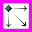

バージョン: 1.0、 October 2010
|  | イン＆アウト動作コントローラー エクステンション |
本コントローラーは、イン＆アウト動作と併用するものです。 オブジェクトの動作をコントロールするアクションが利用できます。
オブジェクトを変更
イン＆アウト動作コントローラーのアクションを適用するオブジェクトを変更します。 本アクション (または 固定値からオブジェクトを変更 アクション) は、動作を変更する前に使用しなければなりません。
固定値からオブジェクトを変更
固定値から現在のオブジェクトを選択します。 本アクション (または オブジェクトを変更 アクション) は、動作を変更する前に使用しなければなりません。
始点にオブジェクトを配置
オブジェクトを動作領域外の動作の開始点に配置します。 配置は瞬時に行われます。
終点にオブジェクトを配置
オブジェクトを動作の終点に配置します。 終点は通常フレームエディタ内のオブジェクトの位置です。
オブジェクトを領域外に移動
オブジェクトが動作の終点にある (動作領域内に表示されている) 場合、本アクションはオブジェクトを領域外に移動します。
オブジェクトを領域内に移動
オブジェクトが動作の始点にある (動作領域外にある) 場合、本アクションはオブジェクトを領域内に移動します。